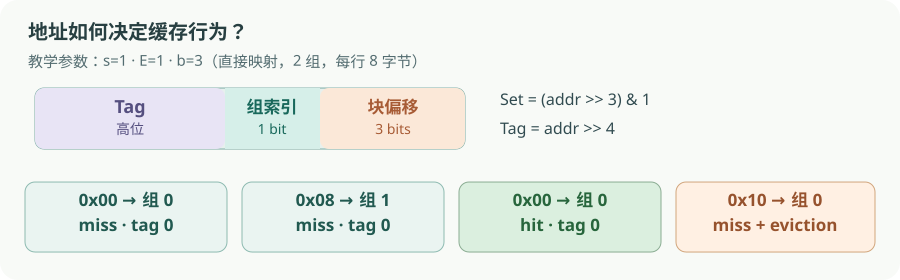

计算机系统 · 实验与不变量 / 25
三个 Lab，为什么都在考“状态是否一致”？
Cache Lab 追踪一条缓存行的状态；Shell Lab 追踪一个作业的状态；Malloc Lab 追踪一块堆内存的状态。对象完全不同，故障却都来自同一个问题：状态更新发生在什么时候，谁保证它始终合法？
本章按 CS:APP3e 常见实验组织；具体接口、评分与输入轨迹以你拿到的 handout 为准。示例是教学模型，不是官方 Lab 答案。
25.1 从现象出发：正确性不只取决于算法
想象一次缓存访问发生在替换之前、一个子进程在登记前就退出，或者两个相邻空闲块在释放后没有合并。这些问题看似不相干，却可以统一为：事件、状态、必须维持的不变量。
| 实验 | 关键状态 | 必须成立的不变量 |
|---|---|---|
| Cache | valid / tag / 最近使用次序 | 命中必须匹配有效位和 tag；替换只能发生在所属组 |
| Shell | PID / PGID / 前后台 / 运行或停止 | 作业表与实际子进程状态不能被信号竞争打乱 |
| Malloc | 块大小 / 分配位 / 空闲链表 | 块不重叠、对齐正确，且空闲链表与堆边界一致 |
下面我们依次缩小观察范围：先用四次访问理解 Cache，再看一次 fork 的竞态窗口，最后用一次 free 理解内存边界。
25.2 Cache Lab：先算索引，再谈命中和替换
以一个教学用直接映射缓存为例：s=1（2 组）、E=1（每组 1 行）、b=3（每行 8 字节）。一个字节地址拆为偏移量、组索引、标记：组索引 (address >> 3) & 1，标记 address >> 4。真实 Cache Lab 接受不同的 s/E/b 参数，不可硬编码此例。

0x00 和 0x10 进入同一组却拥有不同 tag，因此最后一次访问必须驱逐该组的旧行。交互：按访问顺序移动观察点
点击任一步，查看从空缓存开始重放到这一步的累计计数；这是确定性示例，不是机器硬件的真实观测。
实现时，先查命中行，再查无效行，只有整组已满且未命中才驱逐；LRU 时间戳仅在实际访问时更新。轨迹中的 M 操作是一次加载加一次存储，即对同一地址连续访问两次；I 通常跳过。注意位移宽度和 tag 的整数类型，避免把 64 位地址截断到 int。
矩阵转置为什么需要分块？
朴素转置 B[j][i] = A[i][j] 中，A 行方向连续，B 列方向跨步；在直接映射缓存中还可能出现 A/B 冲突。分块把一组读写局限到小区域，但不能仅凭“8×8 等于 256 字节”就断言命中率或最佳块大小：必须结合缓存参数、矩阵行跨度、对齐以及读写冲突，用提供的 trace 评估。
// 结构性伪代码：先保证每个元素只转置一次
for (size_t bi = 0; bi < rows; bi += tile)
for (size_t bj = 0; bj < cols; bj += tile)
for (size_t i = bi; i < min(bi + tile, rows); ++i)
for (size_t j = bj; j < min(bj + tile, cols); ++j)
B[j][i] = A[i][j]; // min、数组声明与边界由实验环境提供25.3 Shell Lab：先屏蔽 SIGCHLD，再登记作业
最容易遗漏的时间窗并不在命令解析，而在 fork() 返回之后、父进程调用 addjob() 之前。若子进程立即退出，SIGCHLD 处理程序可能先回收它；随后父进程却把一个已经不存在的 PID 填回作业表。阻塞信号不是为了“让子进程慢点”，而是为了保护父进程的登记操作。
/* POSIX C 结构片段：省略错误分支与作业表实现 */
sigset_t chld, previous;
sigemptyset(&chld);
sigaddset(&chld, SIGCHLD);
sigprocmask(SIG_BLOCK, &chld, &previous);
pid_t pid = fork();
if (pid == 0) {
sigprocmask(SIG_SETMASK, &previous, NULL);
setpgid(0, 0); /* 新的作业进程组 */
/* execve(...)；失败时用 _exit(...) 退出 */
} else if (pid > 0) {
addjob(pid); /* 保护区内登记，真实作业应记录 PGID */
sigprocmask(SIG_SETMASK, &previous, NULL);
} else {
sigprocmask(SIG_SETMASK, &previous, NULL);
}处理 SIGCHLD 时应循环 waitpid(-1, &status, WNOHANG | WUNTRACED | WCONTINUED)，直到没有可立即报告的状态变化；对 EINTR 和 ECHILD 做区分。处理函数只使用异步信号安全操作，或采用信号屏蔽加主循环处理的设计；不能在处理函数里随意调用 printf、malloc 等接口。
作业控制以进程组为单位。交互式完整 Shell 还需考虑 tcsetpgrp 交接终端控制权；Tiny Shell 的教学约束可能简化这一点。转发 Ctrl+C / Ctrl+Z 应针对前台作业进程组（如 kill(-pgid, SIGINT)），不要误杀 Shell 自身。
25.4 Malloc Lab：分配器是一套可检查的空间账本
把堆想成一串相邻区间。每个区间记录大小和分配状态；空闲块可被查找、分割和合并。无论使用隐式链表、显式双向链表还是分离大小类，核心正确性并不来自链表种类，而来自边界不变量。
| 操作 | 应检查的条件 |
|---|---|
| malloc(n) | 返回地址满足对齐；分割后剩余块足以容纳元数据及最小空闲块 |
| free(p) | 只接受契约允许的指针；相邻空闲块合并后更新相邻边界与链表 |
| realloc(p,n) | 成功后保留前 min(old_size,n) 字节；失败时旧块仍有效 |
| 堆检查 | 所有块恰好覆盖堆范围；无越界、重复空闲节点、相邻未合并空闲块（即时合并策略） |
“脚部”不是每种实现都必须有
边界标记便于向后合并，但很多优化实现只在空闲块保留脚部，利用头部的 prev_alloc 位避免已分配块的额外开销。示例布局必须说明字长、对齐和最小块尺寸；不能把某种 32 位教学宏无条件套在 64 位目标上。
性能评估应把吞吐量、峰值堆占用、外部碎片、轨迹合法性分别测量。声称某个分配器“固定快数倍”或某种 size class“必定 O(1)”都缺乏跨负载保证。
25.5 一份可以执行的自检路线
- Cache：从空状态手算四次访问并与模拟器输出逐步比较，再加上
M、不同组数和边界地址。 - Shell：用立即退出的子进程重复触发竞态；验证前后台任务的退出、停止、继续与僵尸进程回收。
- Malloc：对每次
malloc/free/realloc调用堆检查器，交错测试分割、合并、零大小约定与失败路径，再比较利用率。
自测
为什么“一把全局锁”或“永远阻塞 SIGCHLD”虽可能暂时避免竞态，却不构成正确的系统设计？
查看思路
保护范围必须匹配不变量；无限阻塞阻断子进程状态回收，过粗的互斥又可能阻止必要进度。正确做法是让关键更新原子可见，同时确保后续事件仍可被处理。
资料与适用范围
官方实验边界参阅 CS:APP3e Labs；POSIX 作业控制与进程组可对照 setpgid(2) 与 waitpid(2)。本章是课程导学，不包含官方 handout 中的完整实现或标准答案。
技术深描 · 25 / STATE INVARIANTS
“状态不一致”到底指什么？用三个可复算的例子把它写清楚
把“不一致”拆成可检验的断言后，三个 Lab 就可以用同一套检查：一次事件后，被更新的字段是否仍在合法范围，且与世界真值一致？下面用三个确定性例子演示。
| 对象 | 事件 | 必须原子完成的更新 | 违反后的可观察现象 |
|---|---|---|---|
Cache（教学参数 s=1,E=1,b=3） | 地址 0x00,0x08,0x00,0x10 依次访问 | 命中判定与行填充必须基于同一有效位与 tag | 计数不是 hit 1 / miss 3 / eviction 1 |
| Shell 作业表 | 子进程可能在 fork 后立即退出并产生 SIGCHLD | 屏蔽 SIGCHLD 的区间内完成 fork 与 addjob | 作业表里出现已被回收的 PID，或信号丢失 |
| Malloc 堆 | free 一个相邻空闲块 | 合并后同步更新相邻边界与空闲链表 | 堆检查发现相邻空闲块未合并或块重叠 |
python3 examples/deep-ch24-28-models.py 25该模型只用标准库：一个直接映射缓存对四次访问重放，断言恰好得到 1/3/1 的命中/缺失/驱逐；随后在一块相邻块阵列上做即时合并，断言“两个相邻空闲块算作一段”“释放块 0 后仍是一段”“全部释放后整堆合并为一”。它检查的是终态不变量，而不是日志顺序。性能与碎片指标仍需用真实 trace 实测，不在此断言。